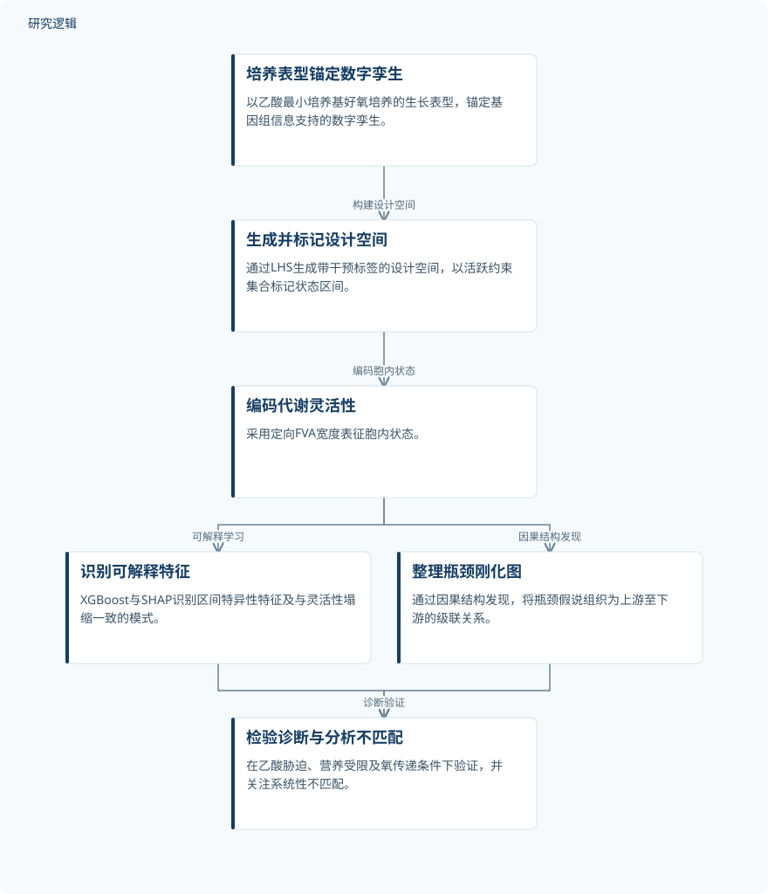

摘要解读
基于代谢灵活性与刚化图谱的生物过程瓶颈诊断因果人工智能数字孪生
Causal AI digital twin for bioprocess bottleneck diagnosis via metabolic flexibility and rigidification maps
解读更新 2026-10-17 10:04 · 依据公开摘要整理，未核验全文细节
非模式微生物培养表现不佳，究竟受什么环节限制？这项研究将稀疏生长表型与基因组信息支持的数字孪生结合，尝试把代谢灵活性的变化转化为可解释的瓶颈诊断线索。
文章目录
从生长不佳追问代谢瓶颈
非模式微生物培养性能不足时，定位限制环节仍然困难。研究围绕这一问题，构建能够考虑干预条件的数字孪生，将有限的观测锚点、可解释特征和因果结构发现结合起来，目标是形成可用于诊断的结果，而不只是预测生长表现。
以生长表型锚定模型，用通量宽度描述状态
研究以嗜麦芽窄食单胞菌（Stenotrophomonas maltophilia）SO-1为受控试验对象，在乙酸最小培养基上进行好氧培养，并以32 h收获时的标准化生长表型OD 600锚定数字孪生。
随后，作者通过拉丁超立方采样（LHS）生成带干预标签的设计空间，用活跃约束集合标记不同状态区间，并以覆盖30个反应或模块的定向通量变异分析（FVA）宽度编码胞内状态。分析端结合XGBoost与SHAP开展可解释学习，同时使用因果结构发现整理瓶颈假说。
依据摘要整理的数字孪生诊断流程


仅概括摘要明确陈述的研究环节与分析关系，并非论文原图，不表示瓶颈假说已获逐项因果验证。
下载 SVG图示关系说明
实线表示相邻阶段的信息流，虚线表示跨阶段联系或反馈。
培养表型锚定数字孪生 → 生成并标记设计空间：构建设计空间；生成并标记设计空间 → 编码代谢灵活性：编码胞内状态；编码代谢灵活性 → 识别可解释特征：可解释学习；编码代谢灵活性 → 整理瓶颈刚化图：因果结构发现；识别可解释特征 → 检验诊断与分析不匹配：诊断验证；整理瓶颈刚化图 → 检验诊断与分析不匹配：诊断验证
灵活性塌缩特征与瓶颈刚化图
摘要报告，可解释学习识别出了不同状态区间的特异性特征，以及与代谢灵活性塌缩相一致的类临界转变模式。因果结构发现进一步生成了“刚化图”，将瓶颈假说组织成从上游到下游的级联关系。这里得到的是可供诊断的结构化假说，不能直接等同于已被逐条验证的因果机制。
在乙酸胁迫、营养受限和氧传递条件下，验证得到状态区间层面的诊断一致性。研究还将系统性不匹配作为非化学计量约束的信号：模型解释不了的偏差，也被纳入瓶颈诊断，而不是只关注一致的部分。
诊断一致性的具体范围仍需查阅全文
本解读仅依据所提供的完整摘要。摘要未交代独立培养样本数、重复设置、比较基线、诊断一致性的定量指标及不确定性，也不足以判断各验证条件的具体覆盖范围。这些是当前资料无法确认的信息，不代表论文没有开展相关工作。
LHS生成的设计空间不能当作新增的独立培养样本；类临界转变模式也不等于已经确证的临界点。刚化图中的因果方向如何确定、具体瓶颈是否经过直接干预检验，以及结论能否推广至其他菌株或培养体系，均无法仅凭摘要判断。
阅读启发：关注不匹配如何参与诊断
阅读启发：对智能运维中的数字孪生与故障诊断而言，值得关注的是这项研究如何连接“可解释状态特征”与“瓶颈假说”，以及如何解释系统性不匹配。进一步阅读可重点查看状态区间的判定依据、刚化图的证据边界，以及作者如何区分非化学计量约束与其他误差来源；目前不宜据此宣称其已适用于一般工业故障诊断。
以上为本站阅读启发与建议，不是论文已验证的结论。